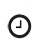

AdiChunchanagiri, Gokarna & Sirasi Marikamba Special
DETAILS OF THE TRIP
 Duration 3 Nights |  Dparture location Bangalore |  Departure time 06.30 am |  Contact no. 8183827838 |
The Sirsi Marikamba Temple is dedicated to the Goddess Durga aka Marikamba. Gokarna is a popular pilgrimage destination for Hindus, it’s known for sacred sites like Mahabaleshwar Temple, which has a shrine dedicated to the deity Shiva. Nearby, Koti Teertha is a temple tank where devotees wash in the holy waters. The town is also home to beaches such as palm-lined Gokarna, in the center, plus Kudle and Om farther south..
Transportation: By A/c Deluxe coach
Hotel: Sri Krishna Residency at Sagar,Shivamogga
Hotel Appolo Residency or Similar at Sirsi
Covered Places: Adi Chunchanagiri,Sagar,Sirsi,Banavasi and Gokarna.
Highlights :
- Well chalked out itinerary, giving enough time to visit all the important sightseeing places.
- Professional guide who will engage and enrich your knowledge about tourist spots and
- LTC fecilities for State , central and PSUs employees
BOOK
BACK